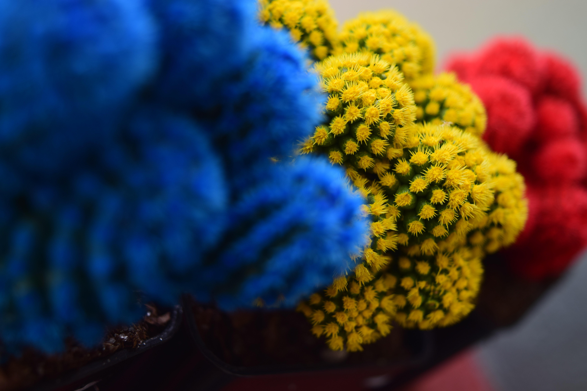
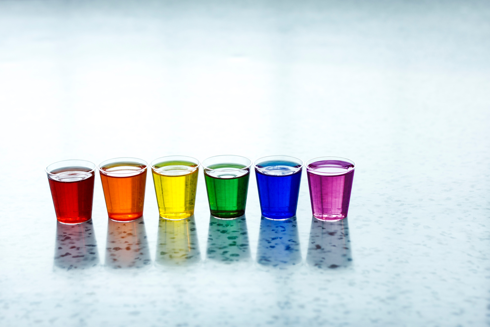

Farvepsykologi
Man forbinder ofte farverne med psykologien da menneske bliver påvirket af de farver som omgiver hverdagen.
Farverum_tekst
Ingen reagere ens på farverne, men der vil altid opstå en eller anden form for følelse - derfor indgår farver også meget i de ting vi laver, samt på produkter og i butikkerne.
Hver farve siges at have sin egen følelse;
Blå forbindes med positivitet og sikkerhed.
Mørkeblå afspejler loyalitet og troværdighed.
Rød frembringer forskellige føleleser hos folk, dette skyldes at rød bliver samlignet både som en afvarsel men også som kærlighed og passion.
Gul er glæde og varme
Grøn forbindes med naturen og vækst
Lilla fremkalder spirtualitet og mystik
Orange spejer ungdommen da dens farve frembringer energi og spænding
(Interfacedesign - fra ide til prototype (side. 181 - 182))World Wide Web
Synlig
Er de farver som ligger placeret så langt ude i det synlige spectrum at de kan opfattes med det blotte øje.
Www.sindalgrafisk.dk/synlige_farver
Rgb
Additivt farvesystem opstår når farverne rød, grøn og blå, igennem lys lægges ovenpå hinanden. Disse kaldes også RGB farver og bruges på elektroniske skærme.
(Interfacedesign - fra ide til prototype (side. 181 - 182))
Cmyk
CMYK kombineres udelukket på de primære farve, denne kombination bruges hovedsageligt til tryk og print
Www.sindalgrafisk.dk/CMYK
Farvesammensætninger
Webdesignerens farvepalette
Primære
Sækundere
Tertiære